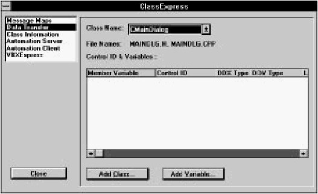
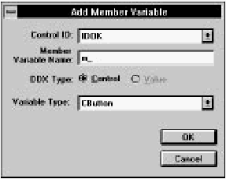
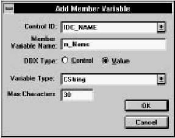
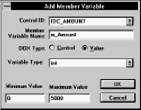

IDDE
Reference
Part 1: Welcome to Digital Mars C++
1. Introducing Digital Mars C++
2. Introducing the IDDE
Part 2: Creating an Application with Digital Mars C++
3. Starting a Project and Defining Workspaces
4. Generating an Application Framework
5. Defining Classes and Their Hierarchies
6. Editing Program Code
7. Adding Look and Feel with Resources
8. Testing an Application
Part 3: Learning Digital Mars C++ by Example
9. Introduction to the Tutorial
10. Lesson 1: Create the DOS Application
11. Lesson 2: Generate an Application Framework
12. Lesson 3: Customize the Interface
13. Lesson 4: Add Messages with ClassExpress
14. Lesson 5: Add a Dialog Box with ClassExpress
Part 4: More about Creating Programs
15. More about Projects and Workspaces
16. More about Project Build Settings
17. More about AppExpress
18. More about ClassExpress
19. Class Editor Reference
20. Hierarchy Editor Reference
21. Text Editor Reference
22. Using Version Control
Part 5: More about Testing Programs
23. Controlling and Configuring the Debugger
24. Commands Available in Debugging Mode
Part 6: About Managing Resources
25. ResourceStudio Resource Editor
26. Dialog Editor
27. Menu, Accelerator and String Table Editors
28. Bitmap, Cursor, Icon, and Font Editors
29. Version Information and Custom Resource Editors
Part 7: Appendixes
A. Expression Evaluation
B. IDDE Settings and Command-Line Options
C. Using NetBuild
|
18. More about ClassExpress
Chapter 4 defined the concept of an application framework and
outlined the steps for building on your skeleton application using
ClassExpress. This companion reference chapter provides more
detail about using ClassExpress, including:
- Deriving a class to handle user interface events in your
program
- Working with Dialog Data Exchange (DDX) and Dialog
Data Validation (DDV)
- Enabling a C++ class as an OLE2 automation server or
client
- Deriving a C++ class from an existing Visual Basic
custom control (VBX)
Deriving a Class to Handle User Interface Events
With ClassExpress, you can derive a new class designed to handle
user interface events such as menu selections and button clicks
directly from a Microsoft Foundation Class (MFC) library class.
Suppose, for example, that you want to add a new dialog box to
your application. To derive a class from the CDialog class using
ClassExpress, follow these steps:
- Create an application framework for a standard SDI
program using AppExpress (for details, see Chapter 4,
"Generating an Application Framework").
- Use ResourceStudio to create a new dialog box resource
(see Chapter 7, "Adding Look and Feel with Resources").
- Launch ClassExpress from ResourceStudio or from the
IDDE's Tools menu.
- Add a new class to your program by clicking on the Add
Class button. (Follow the instructions in Chapter 4,
"Generating an Application Framework.") Be sure to
derive the new class from the Dialog class type.
In ClassExpress, all of the base classes from which you
derive new classes are themselves derived from the MFC
class CCmdTarget. The MFC Library Reference defines
CCmdTarget as the base class for the message map
architecture. Any class derived from CCmdTarget inherits
the ability to respond to user interface events such as
menu and toolbar selections and dialog box actions.
- In the ClassExpress main window, verify that your class
has been created by browsing through the Class drop-down
list.
- Select the new class name from the Class list. Note that
the list of Control IDs and Windows messages for your
derived dialog box class is different from the list for non-dialog
classes.
Note:
ClassExpress filters out the Control IDs and
Windows messages that do not apply for the
selected class name. For example, dialog box
classes can handle the WM_INITDIALOG message,
but this message is not handled by any class derived
from CFrameWnd.
The ability to add new classes that derive specialized message-handling
functionality from the base MFC classes is one of the
benefits of using ClassExpress. The following material summarizes
the type of functionality that a new class inherits if it is derived from
CCmdTarget. For more information on any of these base classes,
refer to the Microsoft Foundation Class Library Reference.
- CmdTarget:
- The base class for all MFC classes that offer
support for Windows message handling. You probably
will not derive a new class directly from CmdTarget;
instead, use the other base classes in this list.
- Dialog:
- This class implements dialog boxes, either modal
or modeless. It usually is associated with a dialog box
resource template created in ResourceStudio. Member
variables of this class typically are mapped to fields or
controls in the dialog box. For details on how this
mapping is established, see the next section, "Working
with Data Transfer: DDX and DDV."
- Document:
- The application's data is represented by the
document class. The data can be anything the
programmer chooses. All file input and output should be
handled within the document class.
- FormView:
- A class of views that has built-in support for
scrolling and for child controls. FormViews typically are
combined with a dialog box resource template. One way
in which the FormView class differs from the Dialog class
is its added support for scrolling.
- FrameWnd:
- The main window class for single document
interface (SDI) applications.
- MDIChildWnd:
- The child document window class for
multiple document interface (MDI) applications.
- ScrollView:
- A class of view window that supports
scrolling.
- View:
- The base class that provides the connection
between the document class representing the program
data and the user interface to that data.
- Wnd:
- The base class for any window, including dialog
boxes, frame windows, views, and dialog box controls.
Because this class is used to derive many of the other
classes listed here, choose Wnd as a base for a new class
if other choices do not satisfy your programming
requirements.
- Splitter:
- This special type of window can contain
multiple panes. A pane is usually a window that is
associated with a View-derived class in the application.
Working with Data Transfer: DDX and DDV
The previous section discussed the architecture classes that you use
to build an object-oriented Windows program with the MFC library.
The application, document, view, template, and frame window
objects are the key components of a standard Windows, MFC-based
application.
This section describes MFC library support for data transfer between
dialog boxes or other windows and your C++ objects that store that
data. This is referred to as Dialog Data Exchange (DDX) and Dialog
Data Validation (DDV). You use the Data Transfer options of
ClassExpress to bind class member variables to dialog box or
window controls.
Note:
Data transfer using DDX/DDV can be applied to
any window that is derived from the MFC base
class, CWnd. It is not restricted to dialog boxes
derived from CDialog.
Dialog Data Exchange with Windows 95 Common
Controls is also supported.
Implementing Dialog Data Exchange (DDX) using ClassExpress
To implement DDX using ClassExpress, use the following steps.
Before performing these steps, generate a dialog box application
with AppExpress, then:
- Add a few edit controls to your skeleton dialog box
using ResourceStudio.
- Launch ClassExpress from ResourceStudio or from the
IDDE's Tools menu. ClassExpress loads the project and
displays the Message Maps options.
- In the upper-left listbox, click on Data Transfer. From the
Class drop-down list, select the CMainDialog class.
The ClassExpress window should look similar to that
shown in Figure 18-1.

[Figure 18-1 Data Transfer page in ClassExpress
- Click on the Add Variable button. The Add Member
Variable dialog box shown in Figure 18-2 opens.

[Figure 18-2 Add Member Variable dialog box
- From the Control ID drop-down list, select a dialog box
control that you want to map to a class member variable.
- Edit the Member Variable Name to specify the name of a
variable to be mapped to the selected Control ID. The
variable does not have to exist in the class. (ClassExpress
adds it automatically to the class for you.)
Note:
Nonstatic class member variable names are usually
prefixed with m_for easy identification; however,
you are not required to follow this convention.
- For DDX Type, select Control to map the control ID and
variable name to a control class (such as CButton or
CEdit). Select Value to map to a CString or to a numeric
type.
- Select a Variable Type for this member variable from the
Variable Type drop-down box. The available types
depend on the type of control being mapped and the
DDX Type option.
- If you selected Value from the Type radio buttons, one
or two additional fields are displayed along the bottom
of the dialog box. If the added member variable is of a
numerical variable type, two fields are displayed, which
allow you to set the minimum and maximum ranges for
the variable's value. If the variable type is CString, then
only one field is displayed, in which you specify the
maximum number of characters that the CString can
contain. (You cannot specify a minimum number of
characters.)
Figure 18-3 shows an example using a CString
variable type.

[Figure 18-3 Adding a CString member variable
- Click OK. You are now back in the ClassExpress
window, and the member variable you just added is
displayed in the spreadsheet. If you added minimum or
maximum values for your member variable, a dialog data
validation function name is displayed in the DDV type
field.
Understanding data transfer at the source code level
The procedure in the preceding section instructs ClassExpress to
establish a link between your CMainDialog class and a control within
a dialog box. In the implementation file maindlg.cpp are calls to
virtual functions that CMainDialog inherits from other MFC classes.
These functions perform the dialog data exchange and validation
(DDX/DDV) for your program.
This section explores the source code generated by ClassExpress and
explains the implementation of data transfer— the first step in how
DDX functions bind member variables to dialog box objects to
transfer data between the variables and the controls. Next, the
validation of values entered into dialog box controls is explained.
The third section describes how data transfer functions are invoked
by the UpdateData function.
Dialog Data Exchange (DDX)
To implement DDX, follow these steps:
- Select Open from the IDDE's Project menu to open the
dialog box project you created earlier.
- Open the maindlg.cpp file in a Source window. Either
double-click on maindlg.cpp in the Project window or
open an empty Source window, then open the source
file using the Open command in the File menu.
- From the Edit menu, choose Find and search for
DoDataExchange. Look at the definition for the
method CMainDialog::DoDataExchange.
ClassExpress has overridden the CWnd method
DoDataExchange in your CMainDialog class. A sample
implementation of DoDataExchange follows.
void CMainDialog::DoDataExchange(CDataExchange* pDX)
{
CDialog::DoDataExchange(pDX);
//{{ AFX_DATA_MAP(CMainDialog)
DDX_Control(pDX, IDABOUT, m_About);
DDX_Control(pDX, IDOK, m_OKButn);
DDX_Control(pDX, IDCANCEL, m_CancelButn);
DDX_Control(pDX, IDHELP, m_Help);
//}} AFX_DATA_MAP
}
DDX lets you copy data easily from class member variables to dialog
box controls, then from the controls back to the member variables.
This is accomplished by implementing an override for the
CWnd::DoDataExchange method in your dialog box class. For
each control that is mapped to a member variable, ClassExpress
generates a call to a DDX function. There are four DDX function
calls in the code sample shown above.
DDX functions take the form:
DDX_xxx(pDX, nIDC, Data);
where:
- pDX is a pointer to a CDataExchange object. This
object contains context information such as the dialog
box instance and whether the data exchange is from the
member variable to the control or vice versa.
- nIDC is the dialog box control ID.
- Data is the member variable in your dialog class.
Note:
DDX functions that exchange data with Visual Basic
custom controls (VBXs) take an additional
parameter, nPropIndex— the property index being
exchanged. This parameter is shown before the
Data parameter.
The preceding sections cover how ClassExpress prompts you for
new member variables, then generates code that performs automatic
data exchange between those variables and their respective dialog
box or window controls. The next section describes how to enhance
data exchange by using data validation.
Dialog Data Validation (DDV)
When adding a new variable using the Data Transfer options in
ClassExpress, you can define minimum and maximum values for
numeric variables and maximum lengths for CString variables. This is
illustrated in Figure 18-4 below.

[Figure 18-4 Adding a numeric member variable
In this example, the member variable m_PayTo is defined as an
integer and is limited to values between 100 and 5000. This variable
is bound to a dialog box edit control identified by IDC_PAYTO. The
user of the application is not allowed to enter a value in that control
that is outside the minimum and maximum bounds.
You do not have to write a single line of code to enforce this rule.
The DDV functions in the MFC library do this for you. After adding
the variable m_PayTo, as shown earlier, and clicking Close in
ClassExpress's main window, ClassExpress writes the following lines
to the DoDataExchange method of your dialog box class:
DDX_Text(pDX, IDC_PAYTO, m_PayTo);
DDV_MinMaxLong(pDX, m_PayTo, 100, 5000);
The first line binds the edit control to your m_PayTo member
variable. This uses a DDX function, as discussed earlier in this
chapter. The second line is the DDV function that limits values in the
textbox control to between 100 and 5000.
Note:
For each member variable, the DDV function call
should immediately follow the DDX function call in
your DoDataExchange function. This is a
requirement of the application framework and is
enforced when ClassExpress writes new DDX/DDV
function calls to the source code file.
DDV functions take the following form:
DDV_xxx(pDX, Data, ...);
where:
- pDX is a pointer to a CDataExchange object. This
object contains context information such as the dialog
box instance and whether the data exchange is from the
member variable to the control or vice versa.
- Data is the member variable in your dialog class.
- ... indicates the remaining arguments: minimum and
maximum values for numerical variables, and maximum
number of characters for strings.
Calling UpdateData
Your dialog class's DoDataExchange method is called by another
CWnd method, UpdateData, whose prototype follows:
BOOL UpdateData(BOOL fSaveOrValidate);
If the parameter to UpdateData is FALSE, then the function
updates the dialog box controls with data from class member
variables that have been mapped to the controls. If the parameter is
TRUE, then the member variables are updated with data from the
controls and validated.
You call UpdateData from the places in your program at which
you want to exchange data with the dialog box. UpdateData is
called for you automatically in only one place in the dialog
initialization.
In response to the WM_INITDIALOG message, the
CDialog::OnInitDialog method calls UpdateData with a
parameter equal to FALSE, indicating that the controls are being set.
Initialize the values of a dialog class's member variables in your
OnInitDialog method. For example:
BOOL CMainDialog::OnInitDialog()
{
m_ColorIsRedCheckBox = TRUE;
m_Filter = FILTER_NONE;
CDialog::OnInitDialog();
}
Here two member variables, m_Color and m_Filter, are set to
initial values. When the CDialog::OnInitDialog method is
called, it uses those values to set the state of the dialog box controls
mapped to these member variables.
Making Your Application an OLE Automation Server
This section covers the following topics:
- The definition of an OLE automation server
- The difference between creating an automation server in
ClassExpress and a standard OLE server in AppExpress
- The mechanics of creating an OLE automation server
using ClassExpress
- The source code that ClassExpress generates to
implement OLE automation
Note:
Use of the acronym OLE (object linking and
embedding) in this section refers to version 2 of
OLE, which includes automation support.
What is an OLE automation server?
OLE automation is an architecture that allows programs to
manipulate objects within other applications. The application that
defines the objects is called the automation server. Any application
that uses OLE to manipulate another application's objects is called an
automation client. For example, Microsoft Excel is an automation
server, and Microsoft Visual Basic is an automation client. From
within Visual Basic, you can write a program that loads an Excel
spreadsheet, runs Excel macros, and saves the spreadsheet.
OLE automation server vs. OLE server
OLE automation is an extension of the original object linking and
embedding technology that originated in version 1 of OLE. The
linking and embedding features determine how data from one
application is used in another. For example, you can embed a
spreadsheet document within a word processing document, or link a
word processing document to a spreadsheet document that exists in
a file.
Note:
An embedded object's data is saved as part of the
client application's data. A linked object's data is
saved independently of the client's data; the client's
data contains a reference to the filename of the
linked data.
In these examples, the application that is the container for the
spreadsheet is called an OLE client or a container application. The
application that originally created the spreadsheet and that is used to
edit the spreadsheet is called the OLE server application. The server
application is responsible for creating and maintaining data objects
embedded in or linked to another application.
When you create an OLE server application with AppExpress, you
are making it possible for your application's data to be embedded in
or linked to another application's data.
OLE automation was introduced in the second version of the OLE
technology. Automation has nothing to do with embedding or
linking to data objects. It is used to manipulate objects that an OLE
automation server has created.
Using OLE automation to manipulate an object allows you to do
some or all of the following:
- Query and change the properties of an object
- Call functions that are defined in the object
- Be notified when an object triggers a specific event
Although an OLE server might provide embedding, linking, and
automation support, all three options do not have to be provided.
For example, you could create an automation server that only
performs mathematical calculations, has no user interface, and is
accessible only by function calls through the OLE automation
interface. In this case, you only need an OLE automation server.
Linking and embedding technology, which is packaged in a standard
OLE server, is not required.
Enabling your application to be an OLE automation server
This section assumes that you have generated a sample MFC-based
application framework with AppExpress. You use that framework in
this section.
To enable your application to be an OLE automation server:
- With the project containing your sample application
framework loaded in the IDDE, launch ClassExpress by
choosing it from the Tools menu in the IDDE's main
window.
- To act as an OLE automation server, your application
needs a C++ class that defines an automation object. In
ClassExpress, you take care of this by adding a class.
Click on the Add Class button.
- Select a Class Type. This specifies the MFC class from
which your new class is derived.
- Type the name of the class in the New Class Name
textbox.
- Check the OLE automation box. If your class is derived
from CCmd Target or CWnd, the Creatable check box
and the External Name textbox become visible.
- For CCmdTarget-and CWnd-derived classes, if you want
OLE client applications to be able to create instances of
your OLE automation object, check the Creatable box as
well.
- For CCmdTarget-and CWnd-derived classes, enter an
External Name that will be used by OLE automation
client applications to identify your automation object.
- Click OK. At this point, ClassExpress generates the new
class in your project's source code and reports that the
classes were generated correctly. You are returned to the
main ClassExpress window.
Completing these steps creates the basic source code structure for
your OLE automation class. However, you may also want to take
advantage of ClassExpress's ability to add functions and properties to
your class that will be exposed by OLE automation.
Adding exposed functions to an automation server class
First, select the class from the Class Name drop-down list. To add a
function, follow these steps:
- Click the Add Function button on the Automation Server
page of ClassExpress. The Add Function dialog box
opens.
- In the External Name textbox of Add Function, type the
name by which automation clients will refer to the new
function. As you type, the Internal Name textbox mirrors
the name you are entering.
- If you want your new function to have an Internal Name
different from its External Name, type the desired
Internal Name in that textbox. The Internal Name is the
name the function will have in your source code.
- Select the function's Return Type from the drop-down list
with that label. In addition to the standard types void,
short, long, float, and double, this list contains the
OLE types CY, DATE, LPDISPATCH, SCODE, BOOL,
VARIANT, and LPUNKNOWN. If you are unfamiliar with
these latter types, consult the OLE2 Programmer's
Reference for their definitions.
- If your function takes arguments, add them one at a time
by clicking on the Add button at the bottom of the
Parameters List listbox. The Add Parameter dialog box
that is displayed lets you specify the Name and Type of a
parameter. Enter the parameter's name in the Name
textbox. Select its type from the Type drop-down list.
(The Type list contains more OLE types. See the OLE2
Programmer's Reference for details.) Click OK. You are
returned to the Add Function dialog box, in which the
parameter you just specified is displayed in the
Parameters List listbox.
Follow the procedure just described to add any other
parameters the function requires.
- Click OK in the Add Function dialog box. You are
returned to the Automation Server page of ClassExpress.
The function you just created is added to the Name
listbox, and is referred to using its external name. When
this function is selected in the Name listbox, the
Implementation listbox displays the prototype of the
function that ClassExpress generates to implement it.
Adding properties to an automation server class
First, select the class from the Class Name drop-down list. To add a
property, follow these steps:
- Click the Add Property button on the Automation Server
page of ClassExpress. The Add Property dialog box
opens.
- Select one of the radio buttons to the right of the
Implementation label. If you want to grant automation
clients read-only access to the property you are adding,
select Variable. If you want to grant read/write access to
the property, select Get/Set Function.
- In the External textbox, type the name by which
automation clients will refer to this property.
As you type, the values of the Get Function and Set
Function fields are automatically filled in using the
external name extname you specify. If you are creating a
read-only property, it will be implemented as a member
variable in your automation class. The Get Function
textbox will contain the proposed name of that variable,
m_extname. If you are creating a read/write property, it
will be implemented by a pair of member functions— a
Get and a Set function— in your automation class. The
Get Function and Set Function textboxes will contain the
proposed names of those functions, Getextname and
Setextname.
- Select the Type of the property from the drop-down list
with that label. In addition to the standard types short,
long, float, and double, this list contains the OLE
types CY, DATE, LPDISPATCH, SCODE, BOOL,
VARIANT, and LPUNKNOWN. If you are unfamiliar with
these latter types, consult the OLE2 Programmer's
Reference for their definitions.
- If you want, change the names of the Get and Set
Function.
- Click OK in the Add Property dialog box. You are
returned to the Automation Server page of ClassExpress.
The property you just created is added to the Name
listbox and is referred to using its external name. When
this item is selected in the Name listbox, the
Implementation listbox displays the member variable or
the pair of functions that ClassExpress generates to
implement the property.
OLE automation server source code
This section examines some of the source code generated by
ClassExpress that enables an application to be an OLE automation
server.
As explained in the previous section, you create a new class using
ClassExpress and indicate that the class should support OLE
automation. When the source code is generated, the constructor for
your new class contains the following code:
EnableAutomation();
// To keep the application running as long as
// an OLE automation
// object is active, the constructor calls
// AfxOleLockApp.
AfxOleLockApp();
OLE automation is first enabled for this object using the MFC
function EnableAutomation. This function should only be called
if there is a dispatch map declared for the class (discussed in more
detail below). If your new class objects are creatable by other
applications, then the MFC function AfxOleLockApp is called in
your constructor.
This function increments a global count of the number of times this
object has been activated by OLE clients. It is the MFC library's way
of ensuring that an object is not destroyed by one OLE client, if it is
in use by another client. In the destructor for your class,
ClassExpress has written a call to the function AfxOleUnlockApp,
which decrements the global count for this object.
ClassExpress also creates a new macro structure called a dispatch
map, as shown in the following example:
BEGIN_DISPATCH_MAP(COLEAutoObject, CCmdTarget)
//{{ AFX_DISPATCH_MAP(COLEAutoObject)
// NOTE -the ClassExpress will add and
// remove mapping macros here.
//}} AFX_DISPATCH_MAP
END_DISPATCH_MAP()
As you can see, a dispatch map is similar to a message map, the MFC
library macro for routing Windows messages to your class methods.
Like message maps, you do not edit the dispatch map directly;
AppExpress and ClassExpress do that for you. The dispatch map is a
macro that generates dispatch table information used by the MFC
library's OLE classes to route automation requests.
In addition to the OLE initialization code in the constructor and the
dispatch map, ClassExpress optionally writes the following macro to
your class implementation file (.cpp):
IMPLEMENT_OLECREATE(COLEAutoObject,"MYOBJ",
0xd73cfd60, 0x3cea, 0x101b, 0x80, 0x60,
0x4, 0x2, 0x1c, 0x0, 0x94, 0x2)
This macro is written if you selected the Creatable check box when
you added the new class in ClassExpress. The macro allows your
OLE automation object, as defined by your new C++ class, to be
created dynamically by an OLE client application. If you do not have
this macro, your automation object would have to be created by
your application before any OLE client could manipulate it using the
automation interface.
The IMPLEMENT_OLECREATE macro takes these arguments:
- The new class name
- The external name of the object
- The components of the class's OLE class ID
The last parameters, the components of the OLE class ID, together
represent a 128-bit value that uniquely defines the OLE object within
Windows.
Another source code file created by ClassExpress has a filename
consisting of the project name with the extension .odl. This file
contains the Object Description Language implementation for your
automation object class. You run the utility program
mktyplib.exe, passing the .odl file as an argument. The result is
a type library file with an extension of .tlb.
The type library file is used by OLE automation clients to query the
objects, properties, and functions exposed by your application.
This section has given you a view of the source code generated for
an OLE automation server. OLE automation has many more facets
that you should explore. Refer to the Microsoft Foundation Class
Library Reference and the OLE2 Programmer's Reference for
additional details.
Making Your Application an OLE2 Automation Client
The Automation Client selection of ClassExpress lets you make an
application an OLE2 automation client for type libraries that export
an OLE2 automation interface. ClassExpress creates a C++ class in
your program that acts as an interface to the type library class.
This section uses the OLE2 sample type library hello.tlb, found
in samples\ole16\hello below your Digital Mars C++ installation
directory. If you do not have this sample file installed, you can select
any other type library file that exports an OLE2 automation interface.
Otherwise, you should install the OLE2 samples.
To make your application an OLE2 automation client:
- Launch ClassExpress and, if necessary, open a project.
For this example, the application type of the project does
not matter.
- Select Automation Client from the list at the upper left of
the ClassExpress window.
- Click the "..." button to the right of the Type Library File
field. The Open dialog box is displayed.
Note:
This dialog box has filtered out all filenames that do
not end with .tlb or .olb. These extensions are
used for OLE type library files.
- Browse to the type library file
samples\ole16\hello\hello.tlb within the
Digital Mars C++ installation directory.
- Click OK in the Open dialog box. The type library file
should now be displayed in the Type Library File field in
the ClassExpress window.
Note:
Class names representing exported OLE2
automation interfaces in the type library are
displayed in the Class list.
- Select _DHello from the Class list.
- ClassExpress fills in the New Header File and New
Implementation File fields with the suggested file names
for the new C++ class that will be generated in your
framework.
- Click on the Generate button. ClassExpress creates the
header and implementation file for your new class.
The C++ class _DHello that was generated by ClassExpress
represents the client OLE automation interface to the _DHello type
defined in hello.tlb. This class provides a number of methods
that simplify the processes of attaching to and detaching from an
OLE automation dispatch connection. ClassExpress generates
additional methods that simplify the interface to
IDispatch::Invoke. If you are not familiar with the OLE
automation architecture, refer to the OLE2 Programmer's Reference.
Creating a C++ Wrapper Class for an Existing VBX
The VBXExpress section of ClassExpress lets you incorporate VBX
controls into an MFC application. ClassExpress makes it easy to use a
VBX by generating a C++ wrapper class through which you can
directly program the VBX. The wrapper class makes use of the MFC
base class CVBControl, which provides access to VBX properties and
events.
You can use VBXExpress with any 16-bit MFC application. (The
restriction arises because VBXs themselves are inherently 16-bit.)
Follow these steps to create a wrapper class for a VBX and add it to
the class hierarchy of a project:
- Launch ClassExpress— either from the IDDE or
standalone. If you launch ClassExpress standalone,
specify your project in the Open dialog box.
- Select VBXExpress from the list at the upper left of the
ClassExpress window.
- The control labeled VBX File displays the name of the
currently selected VBX file. Click the button labeled "...",
to the right of the control. An Open dialog box is
displayed. Select a VBX file and click OK.
VBX File displays the name of the file selected.
ClassExpress examines the VBX file to determine the
name and capabilities (events and properties supported)
of every VBX control contained in the file. (There can be
more than one.) The drop-down list labeled VBX
contains the names of all VBXs in the file. The
capabilities of the control selected from this list are
displayed in the Property and Event list.
- In the textbox labeled ClassName, specify the name of
the C++ wrapper class that will be generated for the
currently selected VBX control. In the textboxes labeled
Header File, specify the names of the C++ files that will
contain the definition and implementation of the class.
Default names are provided in all three fields; you don't
have to change them.
- Repeat the above step for each VBX control in the VBX
file.
- Click on the Generate button. ClassExpress creates the
C++ wrapper classes.
Examine the interface to the VBX control(s) generated by
ClassExpress by opening the header file in an IDDE source window.
You will see that the methods of the C++ class correspond in a
natural way to the properties and events of the VBX.
Summary
This chapter covers ClassExpress in detail discussing these main
points:
- Deriving a new class in an application from one of the
many MFC library base classes
- Establishing links between class member variables and
dialog box or window controls, and validating user entry
without having to write a single line of code
- Manipulating objects within an application from any OLE
client application
- Conversely, enabling an application to manipulate OLE
automation objects in other applications
- Extending the power of an application with Visual Basic
custom controls, without having to write the control
yourself
With this information, you are able to add significant new
functionality in a short period of time to the skeleton application
framework that AppExpress generates.
|
 Home
| Search
| CTG
| RTL
| IDDE
| STL
Home
| Search
| CTG
| RTL
| IDDE
| STL